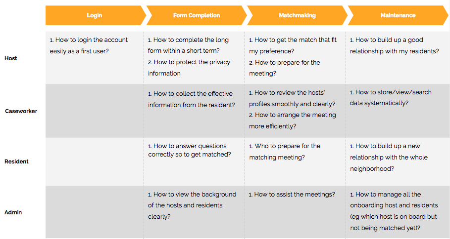

The Block Project Matchmaking App
An internal web app that enhances the matchmaking process for the Block Project
Overview
This is my personal side-project in cooperation with the team of the Facing Homelessness, a community focused non-profit focused on solutions for homelessness based on developing relationships. One of their ongoing projects- The Block Project- aims to invite the local community into the task of ending homelessness by placing a BLOCK Home in the backyard of one single-family lot on every residentially zoned block in Seattle. Being inspired by the vision, I proactively reached out to them and proposing the matchmaking idea after the user research.
To start, firstly, I’ve formed a team composed of members from:
- Business Marketer
- UX Designer
- Full stack software Engineer
- Back-end Engineer
As I contributed as the Project Leader and UX Designer, my main responsibilities are to manage the project development, communicate with the clients, as well as conduct the research, ideation, and wireframe design. Moreover, I’ve cooperated closely with a senior full stack engineer to develop the protosite with HTML5, SCSS, and JavaScript.
Duration: 2017 - Present
Roles: Project Lead, UX Designer
Tools: Illustrator, Sketch, GitHub
1. Research
Learn from People:
To better understanding the project, I conducted the interview with the staffs from The Block Project to understand their current matchmaking process, the challenges, and the goals. There are the key takeaways from the interview:
- 4 User Types: Hosts, Residents, Caseworkers, and Administrators
- Time Consuming: Long paperwork, tedious form, and many matchmaking meetings
- Lack of Human Beauty: Little human beauty element exists in the process of filling the form
Analogous Inspiration:
To learn how to design a user-friendly form for a matchmaking app, the Airbnb and HomeAway are chosen to be the examples of connecting peoples- the former shares the strong bondings between the hosts and the guests while the later focuses on providing the best memories for the family.
Below are the 3 key design patterns that help us to design a more seamless user journey map:
{kind=link}
(1) The progress bar, which indicates how much the users have been done and how far needed to be completed, might ease the uncertainty for the users
{kind=link}
(2) Side notes and ideas may be a great helper for the users to smoothly complete the form
{kind=link}
(3) Clear clarification on how collected questions will be used gives the users a greater peace of mind
2. Ideation
The user flow is conducted to help us know what challenges the users might be encountering in each phase.
Afterward, we developed 3 concepts to reach the goal of optimizing the current matchmaking process in 2 seperate phases. And based on the concepts, we drafted out the journey map for each of the accounts

{kind=link}
3. Solution
The high-fidelity prototype is generated to make the matchmaking process more accessible and easy-to-use, as well as to highlight the core value of human beauty. Since the project is still under the back-end developement and has not been launched yet, below are the 3 highlight for your quick view. The interactive prototype will be rolled out right after the launch. Please stay tuned!
{kind=link}
{kind=link}
{kind=link}
4. Reflection
UI design
- This was a self-taught experience to learn Sketch and design the wireframe and UI with this tool in 3 weeks. One of the most important takeways is to build up a design system like this Sketch post so that to scale up the project in less timeline.
Front-end development
- For this project, we use Ember.js framework to build this complex system but I had a steep learning curve to apply what I just learned from the basic javascript course to the protosite. However, I spent extra amount of time on studying the framework concept and learned from the senior member
Next Step
- To collect the feedback from the users and make changes if needed